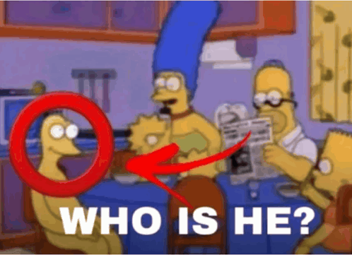

Daniele Cerioli
Daniele Cerioli
Costruisco cose a caso che fanno cose
Sono Daniele, studente e maker. Creo progetti di elettronica, scrivo firmware per microcontrollori e costruisco robot e altra roba a caso.

Elettronica
Schemi e circuiti stampati disegnati in KiCad, alimentazione, sensori e motori.
Firmware
Codice in C e C++ per ESP32 e microcontrollori Texas Instruments, con protocolli come I2C e Modbus.
Robotica
Robot che vedono, ascoltano e si muovono, controllati da Raspberry Pi e da app sul telefono.
Hobby
Interessi
Lingue
- Italiano madrelingua
- Inglese livello scolastico